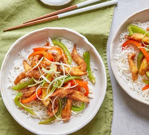

Return to Index
Crispy Shredded Chicken

Description
Succulent Crispy Shredded Chicken, it works as a main course or starter to share.
Ingredients
- 320g pack of chicken breast fillets.
- 2 and a half tablespoons of light soy sauce.
- Olive oil.
- 1 red pepper and 1 green pepper.
- 3 tablespoons of cornflour.
- 3 tablespoons of sweet chilli sauce.
- 1 tablespoon of garlic and ginger paste.
- 1 tablespoon sesame oil.
- 2 spring onions, trimmed and sliced.
Steps
- Slice chicken into thin strips. Pour 2tbsp soy sauce over and marinate for 1 hour.
- Heat 1tbsp oil in a frying pan over medium and cook the peppers for 4 minutes. Remove with a slotted spoon and set aside.
- Spread cornflour in a shallow bowl. Season, then add marinated chicken strips to coat them.
- Fill frying pan with the oil until 1/2cm deep, then heat to medium-high. Add the chicken, cooking for 3-4 mins, turning regularly
until golden brown.
- Mix the remaining soy, chilli, garlic and sesame oil in a bowl. Add cooked peppers and crispy chicken, toss together until
sticky, then serve with sprinkled spring onions.